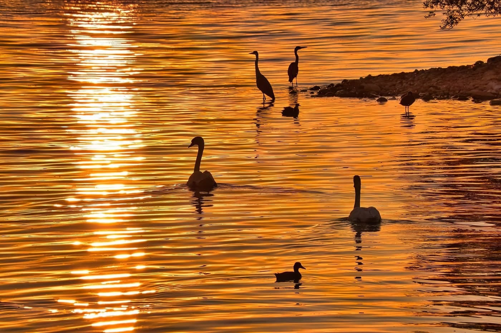
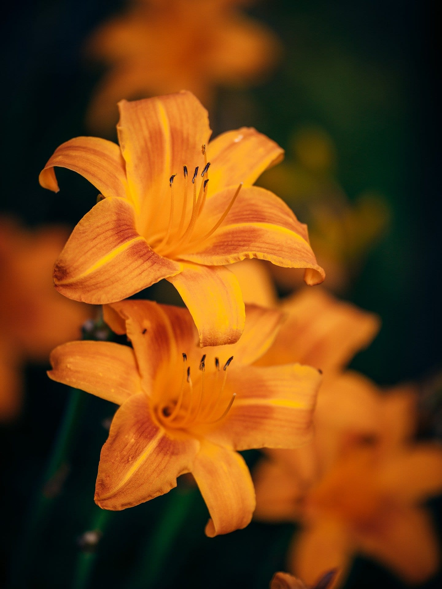
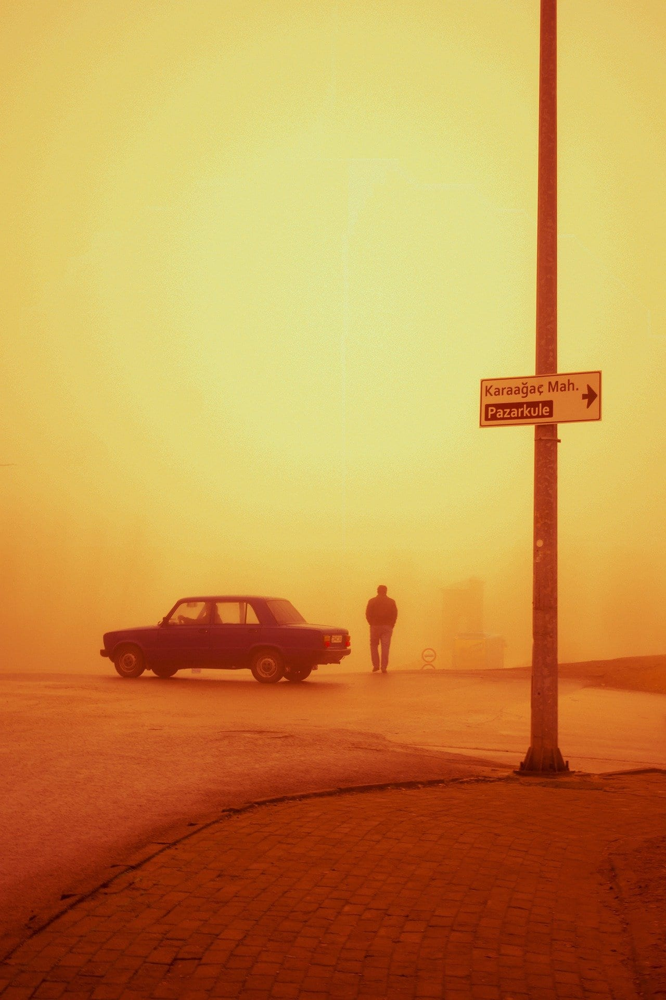
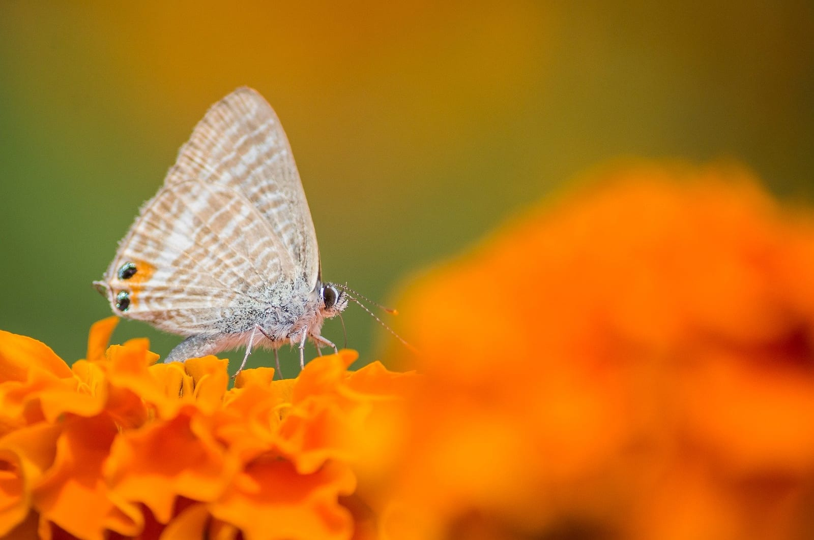
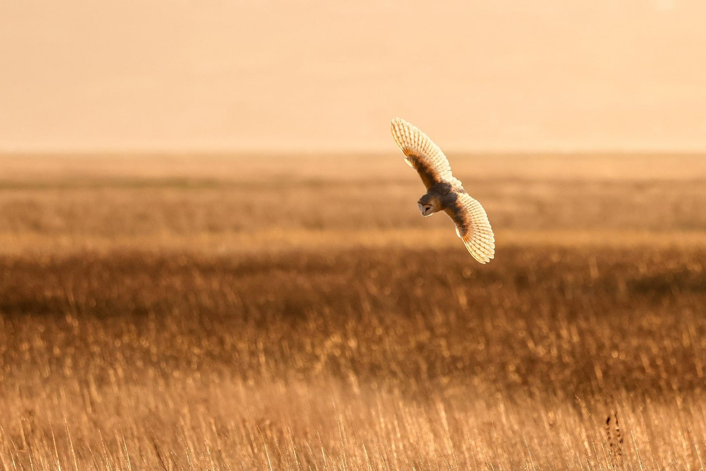
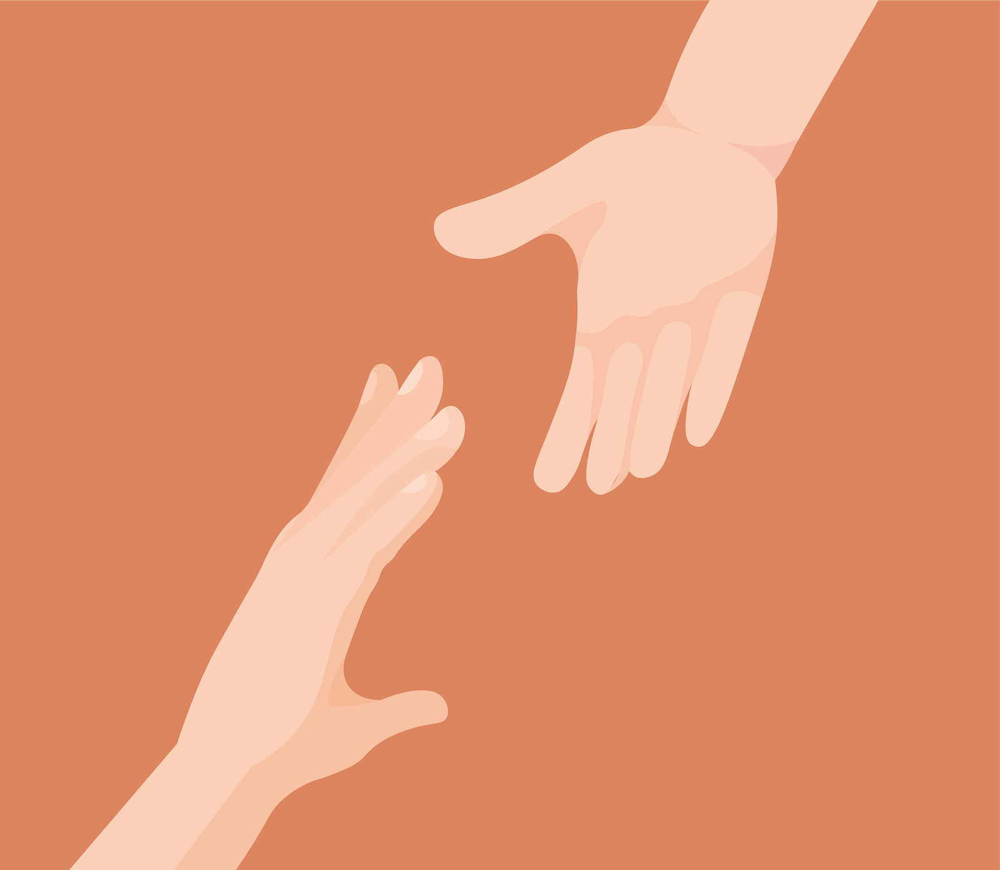

01 Um arquivo de instantes
O mundo acontece nos detalhes.
Um olhar atento encontra histórias na luz que muda, nas formas da natureza e nos caminhos que cruzamos.
Explorar a galeria06 imagens selecionadas

02 Pequenas descobertas
Coleção de momentos
Luz, forma e vida
em seis fragmentos.

02
03
04
05
06Nenhuma imagem nesta categoria por enquanto.
03 Sobre o projeto
Uma pausa para reparar.
Lume é um caderno visual feito de cenas simples e cheias de presença. Uma coleção que convida a desacelerar e descobrir beleza no que quase passa despercebido.
Voltar ao início